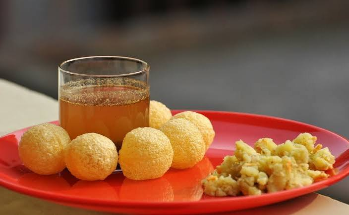

Golgappa

About Golgappa
Golgappa (also widely known as Panipuri or Phuchka) is a highly popular, bite-sized street food snack native to the Indian subcontinent, famous for delivering a literal burst of sweet, spicy, and tangy flavours in a single mouthful.
Ingredients
- Semolina (Suji) or whole wheat puris
- Boiled and mashed potatoes
- Boiled black chickpeas
- Fresh mint and coriander leaves
- Tamarind paste and jaggery
- Chaat masala and roasted cumin powder
Steps
- Gently poke a small hole in the center of each crisp, hollow puri.
- Stuff a small amount of the mashed potato and chickpea mixture inside.
- Prepare the spiced water by blending mint, coriander, and green chillies with water.
- Add tamarind pulp and jaggery to a separate bowl of water for the sweet option.
- Dip the stuffed puri into the chilled, flavored water.
- Serve immediately and eat whole in one single bite!
Home page